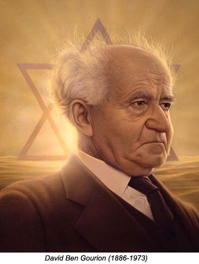
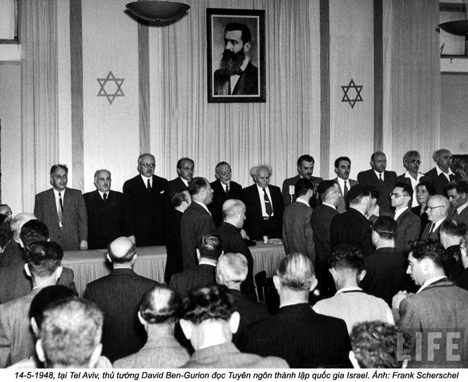
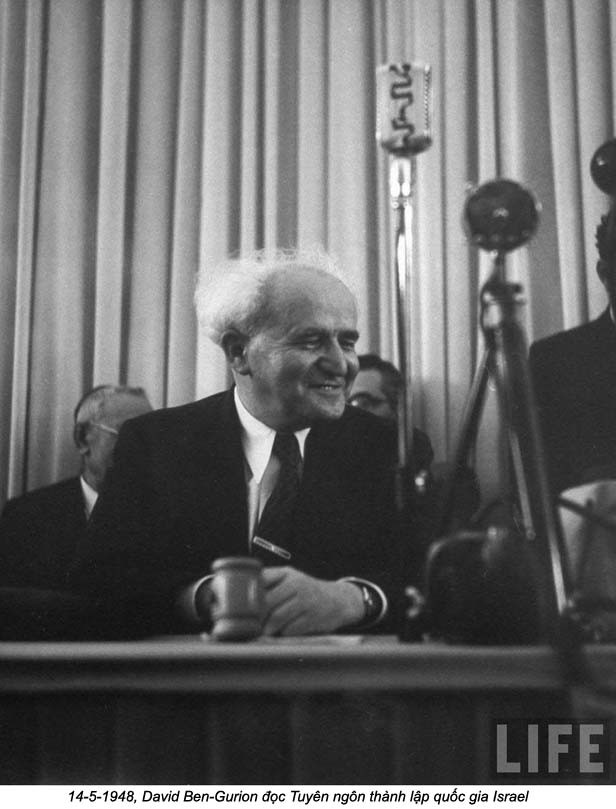

PHẦN II - Chương VII

nh lại theo gót Đức Quốc Xã
Lịch sử chính trị quốc tế luôn luôn đầy những mâu thuẫn.
Người Anh ân cần săn sóc ba trăm trẻ em trên tàu Exodus bao nhiêu thì khi chúng vô Palestine rồi, lại đối đãi với chúng, đồng bào của chúng tàn nhẫn bấy nhiêu, trước kia họ mạt sát Đức Quốc Xã ghê tởm những trại giam của Đức thì bây giờ họ lại dùng ngay trại giam của Đức - Trại Dachau, như trên tôi đã nói - và dựng thêm những trại giam khác ở Chypre, ở Palestine để nhốt Do Thái, chỉ khác một điều là họ không dùng hơi độc và lò thiêu, còn chính sách đàn áp cũng chẳng kém gì Đức: cũng bắt bớ, tra tấn, xử tử, ám sát.
Người Do Thái phải chống cự lại và sau khi là Đồng minh của Anh để diệt Đức, bây giờ họ thành kẻ thù của Anh. Đoàn tự vệ Hagana được khuếch sung, họ tổ chức thêm những đoàn nghĩa quân khác: Irgoun, Stern. Mỗi đoàn dùng một phương pháp riêng, một chiến thuật riêng. Đoàn Stern có tinh thần cuồng tín, chuyên ám sát chính khách Anh. Còn đoàn Igoun gan dạ, tổ chức những cuộc tấn công “ngoạn mục” để làm cho Anh phải mất mặt: chẳng hạn dám xung phong vào các bản doanh Anh chém giết rồi rút ra, hoặc tấn công và cướp các kho khí giới, bắt cóc các sĩ quan Anh.
Quan trọng nhất vẫn là cơ quan Hagana mà nhiệm vụ là tổ chức cuộc chiến đấu, huấn luyện sĩ tốt, đào tạo cán bộ, cung cấp khí giới. Kinh đô nào ở châu Âu cũng có nhân viên của họ lo mua khí giới chở lén vô Palestine.
Người Anh đâu chịu nhượng bộ: họ treo cổ những người khủng bố, lưu đày các lãnh tụ chính trị, thiết quân luật, ban bố luật giới nghiêm. Họ phải dùng 200.000 lính để đối phó với nửa triệu Do Thái mà không lập nổi trật tự. Vì nghĩa quân Do Thái được toàn thể Do Thái, cả một số người Anh nữa, ủng hộ, giúp đỡ cho vượt ngục, trốn thoát sự lùng soát, bao vây của Anh. Nhất là vì họ gan dạ, không sợ chết, chỉ hai ba nghĩa quân có thể làm cho cả một trung đội Anh phãi bó tay rồi rút lui.
Anh đưa vấn đề ra Liên hiệp quốc
Đồng thời người Do Thái cũng chiến đấu về mặt chính trị để các cường quốc Âu Mỹ phải tìm một giải pháp cho vấn đề Palestine.
Sau thế chiến thứ nhì, sức của Anh rất suy, ảnh hưởng của Anh ở bán đảo Ả Rập tất phải giảm. Mỹ đã hất chân Anh ở quốc gia Ả Rập Saudi. Bây giờ buộc Anh phải đem vấn đề Palestine cho Mỹ xét chung. Một Uỷ ban Anh - Mỹ được thành lập để điều tra tại châu Âu và tại Palestine. Uỷ ban cho rằng chỉ có mỗi giải pháp là phải cho ngay 100.000 người Do Thái vô Palestine. Anh không chịu.
Ngay từ tháng sáu 1946, đoàn quân Hagana đã mạnh mẽ, đánh du kích quân Anh, có lần đặt chất nổ làm sụp một phần khách sạn Kinh David nơi mà tổng tham mưu quân đội Anh ở đương đóng; bây giờ thêm 100.000 Do Thái nữa vô thì chịu sao nổi, nhất là Ả Rập càng thêm bất bình, sẽ tấn công cả Do Thái lẫn Anh, mà Anh phải đương đầu với hai kẻ thù.
Ngoại trưởng Anh, Ernest Bevin nghĩ ra -một giải pháp: họp một hội nghị bàn tròn gồm Anh, Ả Rập, Do Thái để tìm hiểu quan điểm của nhau.
Nhưng đại biểu Ả Rập không thèm ngồi chung với đại biểu Do Thái; không ai thoả thuận với ai cả.
Anh và Ả Rập bác bỏ đề nghị của Do Thái; Do Thái và Anh bác bỏ đề nghị của Ả Rập; mà Do Thái và Ả Rập cũng bác bỏ đề nghị của Anh. Ai cũng có lý hết. Do Thái bảo:
- Tổ tiên chúng tôi ở Palestine. Chúng tôi có quyền được về quê hương của chúng tôi. Quyền đó đã được 50 quốc gia ký bản tuyên ngôn Balfour thừa nhận, rồi sau thế chiến thứ nhất, Hội Vạn Quốc đã cho chúng tôi được thành lập một quốc gia Do Thái ở Palestine. Chúng tôi đã gắng sức khai phá Palestine trong mấy chục năm nay, đổ mồ hôi nước mắt vào cái đất mà người Ả Rập trước kia để cho khô cằn này, chúng tôi đã có công lao xây dựng nó, mà không làm thiệt hại cho người Ả Rập, trái lại là khác; chúng tôi tôn trọng quyền lợi của họ và mức sống của họ nhờ chúng tôi mà cao lên. Thế thì tại sao lại cấm chúng tôi? Huống hồ hiện nay có 2.000.000 đồng bào của chúng tôi sống sót tại các lại giam của Đức, bảo họ đi đâu bây giờ?
Ả Rập bảo:
- Đất Palestine, tổ tiên chúng tôi đã chiếm được từ năm 637, năm Quốc vương Omar vô Jérusalem sau ba năm chiến đấu với người Ba Tư. Vậy thì đâu còn là của Do Thái nữa? Từ trước tới nay, chúng tôi vẫn là dân tộc đa số ở đây: hai phần ba dân số là Ả Rập. Khi đế quốc Thổ sụp đổ, Anh đã hứa cho chúng tôi độc lập. Chúng tôi hứa sẽ tôn trọng quyền lợi của những người Do Thái, phần thiểu số trong quốc gia của chúng tôi.
Anh đã lỡ hứa cho cả hai bên, bây giờ không biết đáp ra sao, trút cả trách nhiệm cho Liên hiệp quốc. Liên hiệp quốc lập một Uỷ ban điều tra, Uỷ ban thứ 18 về vấn đề Palestine. Uỷ ban đưa ra giải pháp chia đôi Palestine. Sẽ có hai quốc gia ở Palestine, một của Ả Rập, một của Do Thái. Nhìn bản đồ bên trái ở gần cuối chương, độc giả sẽ thấy ranh giới họ vẽ, chỗ ra chỗ vô, chia thành nhiều mảnh khác nhau, chen lấn nhau, thật kỳ dị?
Dầu vậy, Do Thái cũng vẫn chịu vì nghĩ thà được ít còn hơn không, hãy có một miếng đất để lập quốc đã. Nhưng Ả Rập không chịu, nằng nặc đòi đuổi Do Thái đi.
Anh thấy ôm miếng đất đó chỉ thêm bỏng tay, tuyên bố rút hết quân về, để cho “hai bên lãnh trách nhiệm với nhau”. Nghĩa là Anh muốn bảo Do Thái và Ả Rập: cứ tha hồ mà chém giết nhau, ta bỏ mặc đấy!
Anh phớt tỉnh nhìn hai bên thanh toán lẫn nhau
Anh tuyên bố đến ngày 1-8-1948 thì rút lui và sau nhiều lần bàn cãi sôi nổi, Hội đồng Liên hiệp quốc thoả thuận ngày 19-9-1047 sẽ có một Uỷ ban sửa soạn sự độc lập cho hai quốc gia trước khi mãn nhiệm kỳ của Anh, nhưng rồi họ chẳng sửa soạn được gì cả.


Được tin đó, Liên bang Ả Rập gồm bảy nước: Ai Cập, Syrie, Liban, Iraq, Transjordanie, Ả Rập Saudi và Palestine họp nhau lại phản kháng quyết định của Liên hiệp quốc. Từ Damas tới Amman, từ Bagdad tới Le Caire, đâu đâu người ta cũng hô hào chuẩn bị thánh chiến. Người ta hét lớn trong đài phát thanh: “Mohamed truyền: “Hễ tụi dị giáo tấn công các con thì các con sẽ tắm trong máu của chúng!”. Người ta phát những truyền đơn giọng thật găng và hăng: “A? Tụi Do Thái bảo Jahvé của họ là thần chiến thắng ư? Thì chúng ta sẽ cho họ thấy rằng Islam cũng là một tôn giáo biết dùng lưỡi kiếm…”
Tại khắp các châu thành ở Tây Á, người ta thu nhận lính tình nguyện. Người ta tin chắc sẽ thắng: một bên bốn chục triệu người, một bên già nửa triệu (600.000 người): “Chúng ta sẽ tận diệt Do Thái, làm cho hậu thế phải nhắc tới chúng ta như nhắc tới các cuộc tàn sát của Mông Cổ và Thập tự quân”.
Và cuộc thánh chiến bắt đầu từ năm 1947, ngay trước mặt nhà cầm quyền Anh mà quân đội Anh làm lơ không can thiệp. Mình sắp rút lui, gây thù oán làm gì cho mệt!
Lính Ả Rập bắt đầu tấn công các làng ở phía bắc Palestine, đốt phá, chém giết; rồi họ đột nhập khắp nơi mỗi ngày một nhiều, được những người Ả Rập ở Palestine tiếp đón, giúp đỡ mọi phương tiện. Họ rải rác đóng mỗi nơi một ít, chỉ đợi ngày quân đội Anh rút lui là sẽ thay thế liền, rồi tận diệt Do Thái, buộc Liên hiệp quốc phải hủy bỏ quyết định ngày 29-11-1947.
Họ tấn công các đường giao thông, cắt liên lạc giữa các đồn điền Do Thái. Họ phục kích các đoàn xe vận tải. Trong các châu thành dân cư lẫn lộn như Jérusalem, Haifa, ngày nào cũng xảy ra những cuộc thanh toán của hai bên. Ở Tel Aviv mặt trận cắt ngang thành phố, một bên là khu Do Thái một bên là khu Ả Rập.
Phía Do Thái, người ta hoạt động còn gắt hơn: lén chở khí giới vô, chế tạo thuốc nổ, sửa xe vận tải thành chiến xa. Các tháp nước biến thành tháp canh, hầm chứa rượu biến thành hầm trú. Mỗi Kibboutz thành một đồn tự vệ để rồi sau thành một điểm xuất phát để tấn công Ả Rập.
Người ta biết rằng không thể trông cậy gì ở Anh được: Anh đã hoàn toàn tỏ ra bất lực, không giữ được trật tự, lại còn ngầm giúp Ả Rập nữa; mà cũng không thể trông cậy ở Liên hiệp quốc vì sự can thiệp của Liên hiệp quốc bao giờ cũng chậm trễ và yếu ớt. Vả lại chính Anh cũng không chịu giúp Liên hiệp quốc phương tiện để hoạt động; họ ngầm mong rằng Do Thái sẽ lâm nguy, lúc đó lại phải nhờ cậy họ. Và trong khi chờ đợi, họ khoanh tay ngồi ngó.
Các Kibboutz chiến đấu rất hăng. Một trường hợp điển hình là Kibboutz Beeroth - Yitschak tại miền sa mạc Neguev, khu vực quan trọng bậc nhất về phương diện chiến lược.
Luôn mấy ngày liền Ai Cập thả bom và nã đại bác vào làng, người ta tản cư được kịp các trẻ em trước ngày Ả Rập xung phong: 15-5-1947.
Hôm đó tử sáu giờ sảng, máy bay dội bom xuống không ngớt rồi hai đoàn chiến xa từ phía bắc và phía tây tiến tới, 2.000 bộ binh đi sau.
Quân Ai Cập phá được một vị trí, vô được đồn điền, tiến tới sát dãy nhà đồn điền. Hai bên sáp chiến. Viên chỉ huy Do Thái tử trận. Vậy mà họ cầm cự được cho tới khi có quân tiếp viện tới. Có người sáu giờ liên tiếp liệng lựu đạn vào các xe tăng Ả Rập. Đàn bà làm liên lạc viên và tiếp tế quân nhu. Khi quân tiếp viện tới, trời đã xế chiều, Ả Rập hoảng hốt, bỏ chạy: bên Do Thái 17 người chết và 20 người bị thương, bên Ả Rập bỏ lại hai trăm xác chết.
Đầu tháng 4-1948, Do Thái họp một Uỷ ban lâm thời bầu David Ben-Gurion làm chủ tịch. Ngày 12-4-1948 họ kêu gọi thế giới:
“Xin thế giới nhìn nhận cho Israel quyền được tự cứu minh. Xin thế giới cho Israel được có tiếng nói riêng của mình, được sống một đời độc lập”.
Trước kia, Anh tính đến ngày 1-8-1948 mới rút lui, nhưng bây giờ thấy tình thế rối ren quá, cả Do Thái lẫn Ả Rập đều ghét minh, tấn công mình, nên quyết định chấm dứt nhiệm kỳ hai tháng rưỡi trước ngày đã định.
Tháng 5-1948, Anh rút quân dần dần và giao lại năm mươi đồn gọi là đồn cảnh sát, mà thực chất là đồn chiến lược, cho người Ả Rập.
Ngày 12-5-1948 (1), với tinh thần phớt tỉnh truyền thống của mình, Anh tuyên bố:
“Uỷ quyền sẽ chính thức mãn hạn vào 12 giờ một phút đêm 14 rạng 15-6-1948. Tổng Cao uỷ Anh sẽ rời Jérusalem mà đi Haifa rồi xuống tàu H.M.S Euryalus, chiếc này sẽ nhổ neo mười hai giờ khuya. Quân đội Anh cũng sẽ rút khỏi Jerusalem và các miền khác ở Palestine ngày 14-5-1948”.
Nghĩa là họ chỉ tuyên bố trước có hai ngày rưỡi, vào đúng lúc Uỷ ban Liên hiệp quốc không có mặt ở Palestine, thật là một vố nặng cho dân tộc Do Thái.
Anh rút lui thật, rút về đảo Chypre, tin chắc Do Thái sẽ phải quay lưng ra biển chiến đấu với Ả Rập và chẳng bao lâu, sẽ chịu không nổi, phải cầu cứu họ và lúc đó họ sẽ trở lại. Họ có ngờ đâu - mà cả thế giới đều không ngờ - đẩy dân tộc Do Thái vào con đường chết tức là mở cho Do Thái con đường sống!
Lúc này đây, thế giới mới thấy tài năng và sự cương quyết phi thường của David Ben-Gurion.
Ben-Gurion - người thực hiện được giấc mộng của Herzl
Herzl bảo: “Nếu các bạn muốn thì việc đó (việc thành lập Quốc gia Do Thãi) sẽ không phải là chuyện hoang đường”.

Từ khi bị diệt chủng dưới thời Đức Quốc Xã, người Do Thái nào cũng muốn thành lập một quốc gia Do Thái, nhưng muốn một cách kiên trì, bướng bỉnh thì không ai bằng Ben-Gurion.
Ông sanh năm 1886 ở Plonsk (Ba Lan). Tính tình trầm tĩnh, ít nói, ít cười đùa, ngay cả với anh em chị em trong nhà. Khi đã biết đọc sách rồi thì không lúc nào rời cuốn sách. Hai cuốn đẩu tiên ông đọc là cuốn L’amour de Sion (Tình yêu Sion) và La case de l’oncle Tom (Cái chòi của chú Tôm) dịch ra tiếng Hébreu. Kế đó ông nghiến ngấu sách Nga, mê Toistol. Suốt đời, hễ có lúc nào rảnh được mấy phút là ông học, ngoài tiếng Hébreu và tiếng Nga, ông biết tiếng Anh, tiếng Pháp, tiếng Đức, tiếng Tây Ban Nha, tiếng La tinh, tiếng Hi Lạp và tiếng Thổ.

Ông học tiếng Thổ hồi còn trẻ, mới qua Palestine. Lúc đó Palestine là một thuộc địa của Thổ, cho nên ông và một người bạn, Ben-Zvi (sau làm tổng thống Israel) rủ nhau qua Thổ học tiếng Thổ để giao thiệp với người Thổ. Còn tiếng Hi Lạp ông học hồi năm hay sáu chục tuổi để đọc được Platon trong nguyên văn vì ngoài Thánh kinh ra ông thích nhất cuốn “La République” của Platon, ông học tiếng Tây Ban Nha cũng để đọc Don Quichotte bằng nguyên văn. Năm 1966 tủ sách của ông đã có hai chục ngàn cuốn, đủ các loại từ chính trị tới văn chương, triết học, sử học, ông đọc cả sách về Phật học và có lần vào ở trong một chùa Phật giáo ở Rangoon để đọc kinh Phật nữa. Suốt đời ông vận động, hoạt động cho dân tộc, quốc gia Do Thái, thì giờ đâu mà ông đọc được bấy nhiêu sách.
Ông theo đạo Do Thái, dĩ nhiên, nhưng ít khi tới giáo đường, cũng không theo đúng những luật cùng nghi lễ trong đạo mà sớm lưu tâm về chính trị, chiến đấu cho dân tộc từ hồi 14 tuổi. Lúc đó ông cùng với hai bạn học đã quyết tâm sẽ qua Palestine để thành lập một quốc gia ở đó, ông nghĩ bụng quốc gia sau sẽ cần dùng nhiều nhà chuyên môn, nên năm 16 tuổi ông qua du học Varsovie. Chưa thành nghề thì, năm 20 tuổi ông đã sang Palestine làm công trong các vườn nho, vườn cam. Có hồi thân phụ ông hay tin ông đau, gởi qua cho mười rúp, ông gởi trả lại: “Con tự xoay xở lấy được. Chỉ có mười rúp!”
Ông hoạt động chính trị khá mạnh, người Thổ đuổi ông ra khỏi cõi, ông qua Mỹ, đi thăm hết các tổ chức Do Thái ở Mỹ và thấy rằng muốn thành lập một quốc gia Do Thái thì chẳng những phải chiến đấu với người Ả Rập và người Anh, mà còn phải chiến đấu cả với người Do Thái nữa vì đa số đồng bào ông chỉ muốn yên ổn được nhập tịch các nước phương Tây, hoặc quá tin ở phương pháp ngoại giao và chính sách mua đất. Ông bảo:
“Có nhiều cách để chiếm một xứ: hoặc bằng vũ lực, hoặc bằng các mánh khoé chính trị, bằng hiệp ước ngoại giao, lại có thể mua bằng tiền được nữa (…) Nhưng chúng ta muốn dựng ở Palestine một quốc gia kia. Mà một quốc gia thì không nhận được như một món quà, cũng không thể mua được bằng những hiệp ước chính trị, không thể chiếm được bằng sức mạnh. Một quốc gia thì phải xây dựng bằng mồ hôi nước mắt”.
Như vậy là ông chống chính sách của Chaim Weizmann, nhà hoá học và chính trị gia Do Thái quá tin ở đường lối ngoại giao từ khi nhận bức thư của Balfour, tức bản tuyên ngôn Halfour. Lúc đó ai cũng cho ông là quá khích, mà đứng về phe Weizmann vì nhờ những vận động của Weizmann trong thế chiến thứ nhất mà Anh có thái độ bênh vực Do Thái.
Chỉ riêng Ben-Gurion là vẫn không lạc quan về người Anh. Ít tháng sau, Mỹ lâm chiến (thế chiến thứ nhất) ông xin vô đoàn Lê Dương ở Port Said để chiến đấu bên cạnh Đồng minh, ông xin được qua mặt trận Palestine, nhưng vừa tới nơi thì chiế tranh chấm dứt, ông giải ngũ, ở lại Palestine, thành lập Tổng hội Lao Động Do Thái (Histadrouth) để đào tạo cán bộ cho Quốc gia sau này, nhất là gây dựng một đạo quân mới đầu gồm 4.433 chiến sĩ. Hành động đó của ông như để chống lại chính sách của Weizmann và Weizmann không ưa ông, cho ông là bướng bỉnh, nóng nảy quá, không thể thành công được; vài chục ngàn người Do Thái, làm sao chống nổi tám trăm ngàn người Ả Rập ở Palestine, nhất là ở dưới quyền người Anh.
Mặc những lời chỉ trích và dèm pha, Ben-Gurion vẫn kiên nhẫn theo đuổi đường lối của mình và mười hai năm sau người ta mới thấy ông là người sáng suốt biết trông xa.
Tháng 8 năm 1929, một hôm thứ sáu, hàng trăm thanh niên Ả Rập ùa lại vây các khu Do Thái mà chém giết, cướp bóc. Khi người Anh tới can thiệp thì họ đã trốn thoát. Một trăm lẻ bốn người Do Thái bị giết, hàng ngàn người khác bị thương. Chính quyền Anh cho điều tra, rồi cũng dìm vụ đó đi.
Tình hình càng ngày càng thêm găng giữa Do Thái và Ả Rập, và năm 1939 Anh cho ra cuốn Bạch thư để bênh vực Ả Rập. Lúc đó Weizmann mới biết rằng phải trông vào sức của mình, không thể tin cáo già Anh được nữa.
Ngôi sao của Weizmann mờ đi và năm 1935 Ben-Gurion được bầu làm Chủ tịch Uỷ ban chấp hành Do Thái, ông đem toàn lực ra hô hào đồng bào chống chính sách của Anh, tổ chức đưa lén người Do Thái vào Palestine, tuy chống chính sách đàn áp Do Thái của Anh, ông vẫn đứng bên cạnh Đồng minh trong thế chiến thứ nhì.
Khi thế chiến thứ nhì chấm dứt, ngày 8-5-1945, mọi người Anh ăn mừng hoà binh, thì ông ghi trong nhật ký: “Ngày thắng trận buồn, rất buồn”.
Buồn vì ông biết rằng từ nay ở châu Âu có hoà bình, chứ ở Palestine thì còn phải chiến đấu mạnh hơn nữa, giai đoạn quyết liệt sắp tới, số phận người Do Thái ở châu Âu chưa chắc đã khá mà số phận họ ở Palestine thì còn điêu đứng hơn nữa.
Lời tiên đoán cũng lại đúng: từ 1945 đến 1948, các cuộc khủng bổ của Ả Rập, các cuộc đàn áp của Anh mỗi ngày mỗi tăng. Đúng là một chiến tranh không có mặt trận, không có lính chính quy: Bất kỳ ở đâu, từ đồng ruộng tới rừng rú, từ đường phố trong châu thành tới vườn cam vườn chanh, từ sa mạc phương Nam tới đồi núi phương Bắc, Do Thái và Ả Rập hễ gặp nhau là bắn nhau, có khi ngay dưới mắt người Anh. Ben-Gurion trong mấy năm đó phải qua Mỹ qua Âu vận động đồng bào Do Thái giúp tiền mua khí giới chở về Palestine.
Tiền thì tương đối dễ kiếm vì ở Mỹ có năm triệu Do Thái, đa số giàu lớn. Khó là làm sao đưa được khí giới về Palestine vì Anh cấm ngặt, canh gác ở khắp các bờ biển, biên giới Palestine.
Một lần ở Anh, một nhóm người Do Thái phải làm bộ quay một phim về chiến tranh và trong lúc quay, mấy chiếc máy bay cất cánh rồi bay luôn.
Khi hay tin Anh sắp rút ra khỏi Palestine, một mặt Ben-Gurion phái người qua Mỹ cho chính quyền Mỹ biết ý định của ông là thành lập quốc gia Israel và chỉ xin người Mỹ đừng can thiệp vô. Lúc đó tướng Marshall làm bộ trưởng Ngoại giao khuyên ông đừng. Lực lượng hai bên hơn kém nhau quá xa, một bên 650.000 người, một bên ba bốn triệu, huống hồ Do Thái chỉ có một lực lượng cảnh sát còn Ả Rập có một lực lượng chính quy đầy đủ khí giới.
Mặt khác ông phái bà Golda Meyerson cải trang để tiếp xúc với Abdallah - Quốc vương Transjordanie - người từ trước vẫn có cảm tình với Do Thái để xin Transjordanie trung lập. Abdallah không chịu.
Ngày 12-5-1948, hai sứ giả đó về Tel Aviv cho ông hay kết quả và lúc này ông phải quyết định.
Nếu không tuyên bố thành lập Quốc gia Do Thái thì không còn cơ hội nào nữa và sẽ không có quyền ngoại giao, không có quyền mua khí giới, như vậy tương lai Do Thái nằm trong tay Ả Rập; mà nếu thành lập Quốc gia Do Thái thì rất có thể 650.000 người Do Thái ở Palestine sẽ bị tiêu diệt như Marshall đã cảnh cáo.
Cũng ngày đó chính quyền Anh tuyên bố rút quân rồi 1.500 lính Ả Rập có đủ đại bác và xe thiết giáp bắt đầu tấn công, diệt quân Do Thái ở Ergion.
Ông cho họp gấp một Uỷ ban tối cao gồm 13 người để quyết định, ông trình bày chủ trương của ông là nhất định thành lập quốc gia Israel, rồi yêu cầu biểu quyết: có sáu phiếu thuận, bốn phiếu nghịch (ba người vắng mặt).


Ngày 14-5-1948 (2), hồi 16 giờ, ông họp Quốc hội Do Thái ở Tel Aviv trong một phòng treo hình Herzl. Phòng chật cứng. Ai nấy hồi hộp nín thở khi Ben-Gurion lên diễn đàn tuyên bố:
“Tôi tuyên bố thành lập Quốc gia Do Thái Palestine. Kể từ hôm lay Quốc gia đó lấy tên là Israel. Hỡi các đồng bào Do Thái, ở khắp thế giới, xin các bạn nghe tôi đây. Các bạn đứng hết cả về phía Israel đi. Giúp đỡ quốc gia phát triển. Giúp dân tộc chiến đấu để thực hiện ước mộng ngàn năm của chúng ta, mộng cứu quốc và phục hưng Israel!”
Người ta vỗ tay hoan hô đến rung rinh cả phòng nhóm, người ta la hét, ôm nhau, khóc với nhau, rồi ca hát:
Hỡi Thượng đế,
Xin Ngài che chở chúng con,
Nhờ Ngài mà chúng con sẽ thắng trận,
Chúng con sẽ cất lại ở đây ngôi Đền,
Để sớm tối ca tụng Ngài.
Nhưng khi cười hát xong, mặt Người nào người nấy bỗng hoá ra đăm chiêu: không biết các nước khác nhận tin đó ra sao? Chỉ còn có vài giờ nữa là Anh phủi tay để mặc họ với nhau. Nửa đêm hôm nay đây sẽ xảy ra việc gì? Họ chờ đợi, hy vọng mà lo lắng.
Khi bản quốc thiều vừa chấm dứt thì Ben-Gurion chạy vội tới Bộ Tổng tham mưu vì chiến tranh vẫn tiếp tục. Ở Amman, quốc vương Abdallah ra lệnh cho quân đội xâm nhập địa phận Do Thái. Và sáng hôm sau các đạo quân Ả Rập từ ba phía ùa vào, phi cơ Ả Rập dội bom Tel Aviv.
Sau này nhắc lại việc đó, Ben-Gurion bảo: “Khoảng bốn giờ chiều, quần chúng vui như điên, nhảy múa ca hát ngây thơ ở khắp các đường phố, nhưng tôi thì buồn vì biết cái gì sắp xảy ra. Lúc đó là lúc bi đát nhất trong đời tôi”.
Mà cũng là lúc vẻ vang nhất nữa, quân đội của ông sẽ làm cho cả thế giới phải ngạc nhiên.
Chú thích:
1- Có sách chép là 13 tháng 5
2 - Đáng lẽ là ngày 15 là ngày thứ bảy, ngày Sabbat, mà theo đạo Do Thái, hôm đó mọi tín đồ phải nghỉ, mọi công việc phải ngưng
3 -Iraq không chịu ký vì không có biên giới chung với Israel. Ả Rập Séoudite không tham chiến